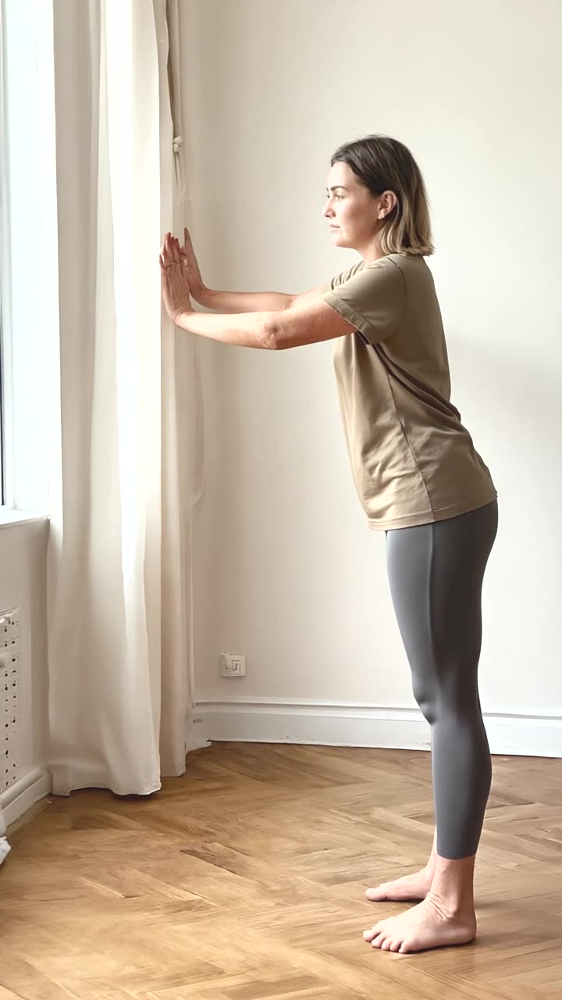
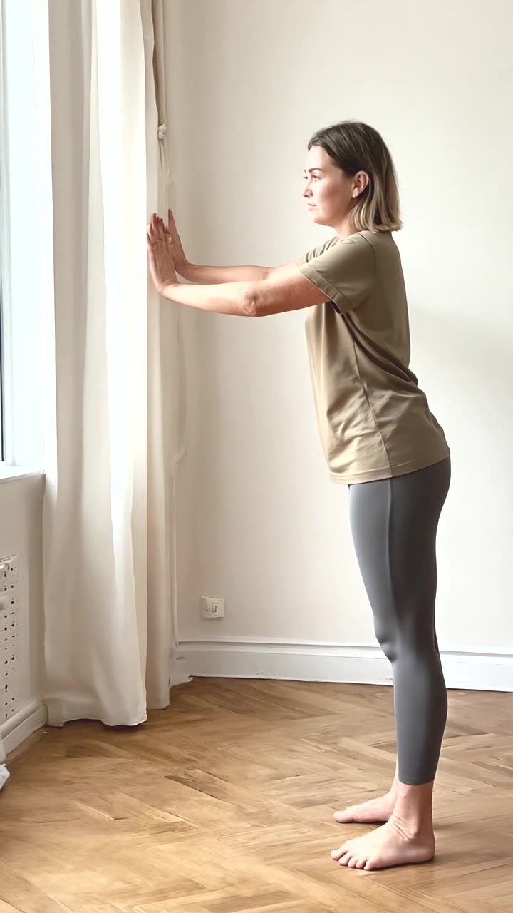
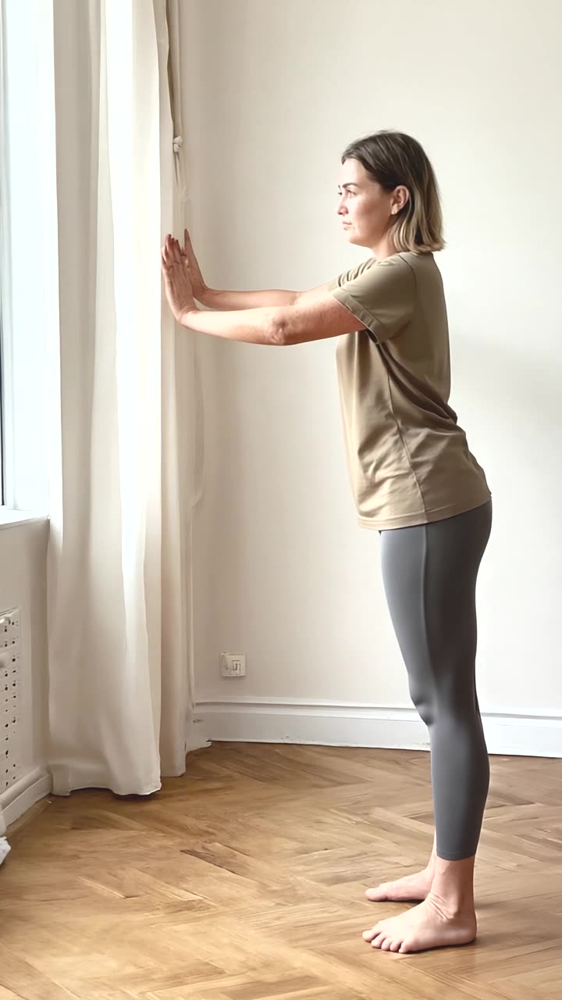
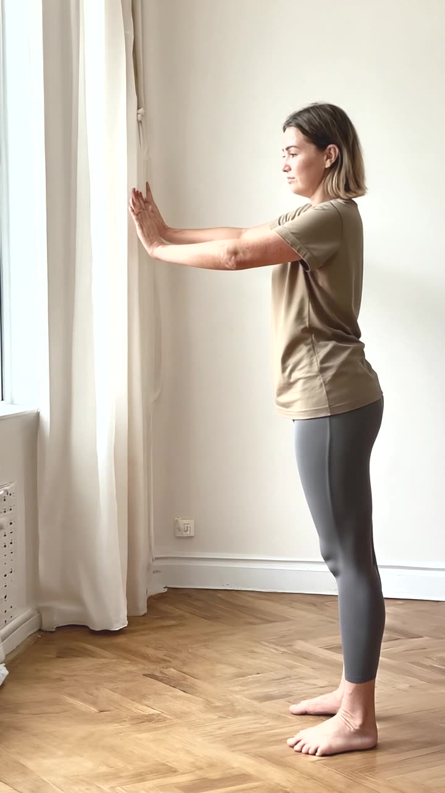
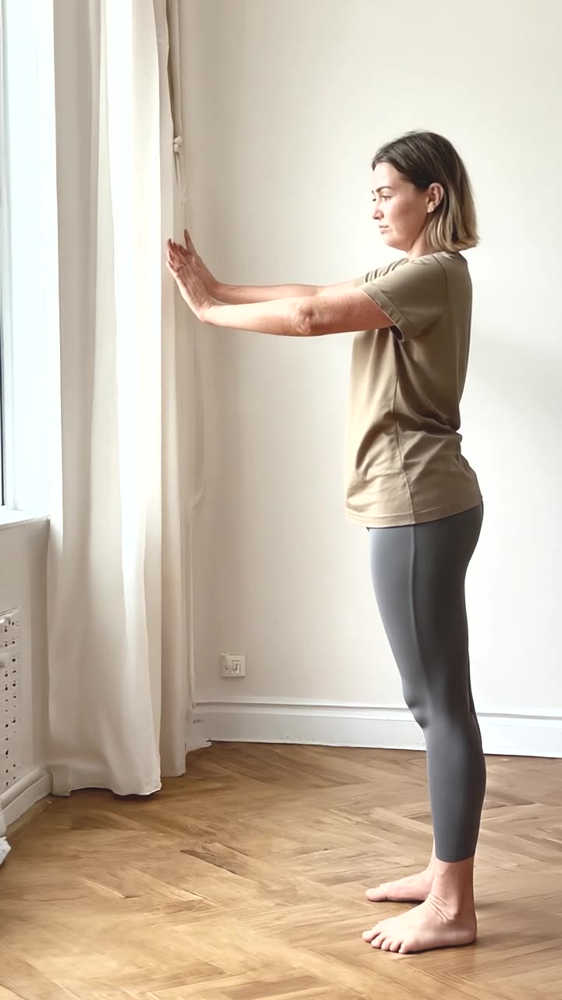
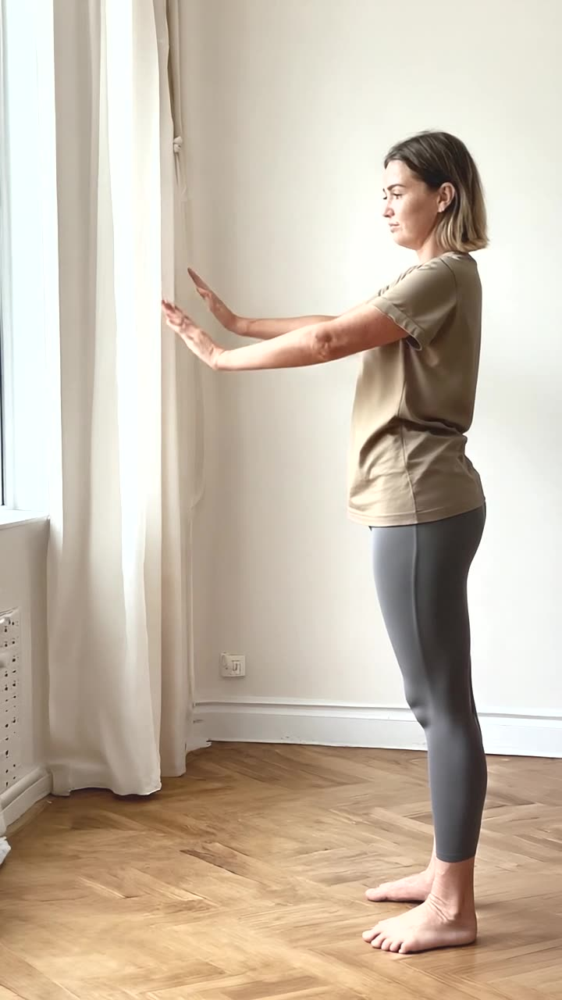
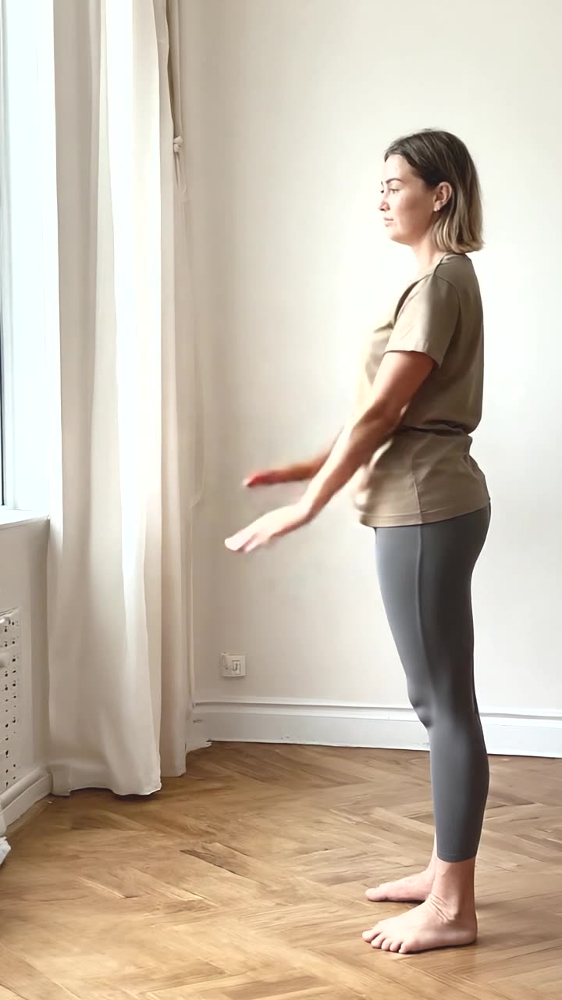

Machine screening only. Watch every clip end to end before approving
anything. A demo clip goes into assets/demo-library.json and must
show the named movement with usable form. An environment clip goes into
assets/environment-library.json and must show what its query
describes, in the right room, with no third-party branding and no equipment.
In both cases the person must be the approved character.
4848b28681519dd6b4a8a55b4ab31edc01bb893aafe32407ecd32d2c92cd620f
5s, seed 3374743713






